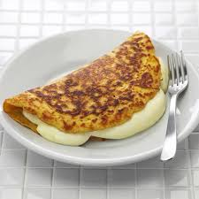

Cachapa

Cachapa venezolana, tradicional rellena de queso
La cachapa es un plato tradicional venezolano hecho a base de maíz tierno molido,
que se cocina a la plancha como si fuera una especie de panqueque grueso.
Es dulce, suave, y generalmente se sirve con queso de mano, un queso fresco venezolano,
aunque también se puede disfrutar con queso mozzarella, queso feta, o cualquier queso fresco que prefieras.
Si quieres saber en detalle lo que es la cachapa venezolana y cómo se hace, aquí tienes nuestra receta.
Ingredientes
- 2 tazas de maíz tierno (puedes usar maíz congelado si el maíz fresco no está disponible)
- 1/3 de taza de leche (opcional, dependiendo de la humedad del maíz)
- 2-3 cucharadas de azúcar (ajusta al gusto)
- 1/2 cucharadita de sal
- 2 cucharadas de mantequilla derretida
- 1 huevo (opcional, para darle más consistencia a la mezcla)
Preparacion
- En una licuadora, combina el maíz tierno, la leche, el azúcar, la sal, la mantequilla derretida, y el huevo (si decides incluirlo).
- Mezcla hasta obtener una consistencia ligeramente grumosa, similar a la de una masa de panqueques gruesa.
- Precalienta una plancha o sartén a fuego medio-alto y engrásala ligeramente con mantequilla o aceite.
- Vierte aproximadamente 1/2 taza de la mezcla en la plancha caliente y extiéndela ligeramente con la espátula para formar un círculo grueso de unos 10-15 cm de diámetro.
- Cocina por unos 4-5 minutos o hasta que veas que los bordes comienzan a dorarse y la superficie tenga burbujas. Con cuidado, voltea la cachapa y cocina por otros 3-4 minutos o hasta que esté dorada y cocida por completo.
- Una vez que la cachapa esté lista, colócala en un plato y añade inmediatamente el queso de tu elección encima para que el calor de la cachapa comience a derretirlo. Tradicionalmente, las cachapas se doblan por la mitad sobre el queso, como un taco.
- Repite con el resto de la mezcla, ajustando el fuego y engrasando la plancha según sea necesario.
Otras Recetas